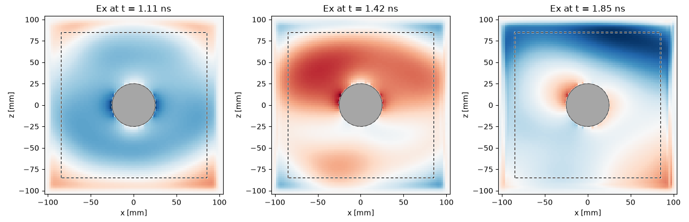
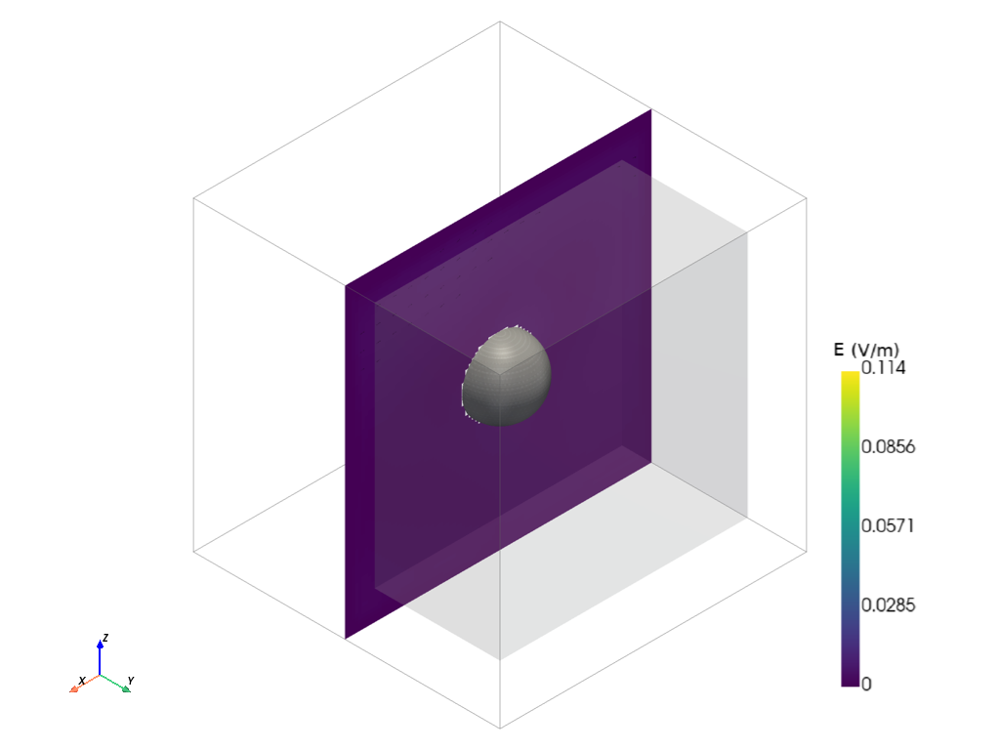
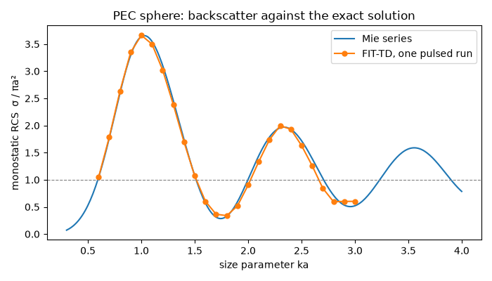

Note
Go to the end to download the full example code.
Plane-wave scattering: the radar cross section of a sphere#
Every driven simulation so far started at a port: a waveguide mode or a discrete feed launched the wave, and the S-matrix was the answer. This tutorial turns the picture around. Nothing is fed — a plane wave arrives from infinity, hits a metal sphere, and the question is what the sphere throws back. That is a scattering problem in the radar sense, and its figure of merit is the radar cross section (RCS): the area a perfect isotropic scatterer would need to return the same power towards the radar.
Three new things meet here. A source declared on the model
(SourcePlaneWave) instead of a port; the
general time-domain analysis AnalysisTD, which
drives any set of sources and ports at once and returns the recorded
signals, monitors and energy instead of an S-matrix; and an
Excitation, the object that binds a source to its
waveform and amplitude. The sphere is the one scatterer with an exact
answer — the Mie series — so the result can be checked against it,
over a whole band, from a single pulsed run.
The scatterer and the incident wave#
A perfectly conducting sphere of radius 25 mm sits in a box of air. Every face of the box is absorbing: the sphere is alone in free space, and what the absorber swallows never comes back.
The plane wave is a model object. It is declared before meshing, like a port, because it shapes the mesh: a plane wave enters the domain through the faces of a virtual box — the total-field / scattered-field box — and those faces must lie on grid planes. Inside the box the fields are the total field, incident plus scattered; outside only the scattered field remains. That split is exactly what a far-field monitor needs, so the monitor’s own recording surface is placed outside the box, in the scattered-field region. The box edges are chosen 15 mm clear of the sphere; the domain adds another 45 mm of scattered-field room around the box.
import matplotlib.pyplot as plt
import numpy as np
from scipy.special import spherical_jn, spherical_yn
import magnelio as mio
from magnelio import geo, monitors, signals, sources
a = 25.0e-3 # sphere radius
box = a + 15.0e-3 # half-width of the total-field box
half = box + 45.0e-3 # half-width of the air domain
model = mio.GeometryModel(
boundary_conditions={face: "CPML" for face in ("xmin", "xmax", "ymin", "ymax", "zmin", "zmax")}
)
air = geo.Brick(origin=(-half, -half, -half), size=(2 * half, 2 * half, 2 * half), material="air")
sphere = geo.Sphere(center=(0.0, 0.0, 0.0), radius=a, material="pec")
model.add(geo.Difference(air, sphere))
model.add(sphere)
model.add_source(
sources.SourcePlaneWave(
name="pw",
direction=(0.0, 0.0, 1.0), # travelling towards +z
polarization=(1.0, 0.0, 0.0), # E along x
corners=((-box, -box, -box), (box, box, box)),
)
)
GeometryModel(2 shapes, background=air)
Frequency is best expressed through the size parameter ka — the
sphere circumference in wavelengths. The band from ka = 0.6 to 3
covers the resonance region, where the RCS swings around its
geometric-optics limit of πa² most strongly; one pulsed run resolves
all of it, and the mesh is sized for the top of the band.
c0 = 299_792_458.0
ka_values = np.linspace(0.6, 3.0, 25)
freqs = ka_values * c0 / (2 * np.pi * a)
f_max = 6.5e9
mesh = mio.Mesh.from_geometry(model, mio.MeshControl(min_nodes_per_wavelength=20), f_max=f_max)
print(f"grid: {mesh.Nx} x {mesh.Ny} x {mesh.Nz} cells")
mesh | feature planes
mesh | grid lines
mesh | materials
mesh | conformal cells
mesh | conformal cells | done (1.3 s)
mesh | PEC masks
mesh | 94 x 94 x 94 cells (1.8 s total)
grid: 94 x 94 x 94 cells
Two monitors watch the run. The far-field monitor records the tangential fields on a closed box that it places by itself, three cells inside the absorber — outside the total-field box, so it sees the scattered field alone — at all 25 frequencies at once. The time monitor records the field on the vertical plane through the sphere at three instants, to show the wave doing what the numbers will later quantify.
The run: an excitation names the source#
AnalysisTD takes the mesh — with the source and the boundary
closure it carries — and the monitors. Its run is driven by a
list of excitations, each naming a port or a source, the waveform to
use and the amplitude in the source’s own unit: volts per metre for a
plane wave. A single Gaussian pulse over the analysis band
illuminates the whole band in one march; the run ends when the
stored energy has decayed 60 dB below its peak, i.e. when the pulse
and the scattered ring-down have left through the absorber.
analysis = mio.AnalysisTD(mesh=mesh, monitors=[farfield, movie], verbose=False)
result = analysis.run(
excitations=[
mio.Excitation("pw", waveform=signals.WaveformGaussian(f_max=f_max), amplitude=1.0),
],
energy_stop_db=60.0,
)
print(f"{result.n_steps} steps, stopped on the {result.stop_reason} criterion")
901 steps, stopped on the energy criterion
The snapshots read from left to right: the plane pulse crossing the box front, the sphere carving a shadow out of it, and finally the scattered field alone — a spherical wave leaving, with the strongest lobe thrown straight back towards the source. Note that outside the total-field box the incident pulse is invisible even while it passes through the box: that is the field split at work.
fig, axes = plt.subplots(1, 3, figsize=(13, 4.2))
for ax, t in zip(axes, movie.t):
movie.plot(component="Ex", t=t, plot_type="color", geometry=model, ax=ax, colorbar=False)
ax.set_title(f"Ex at t = {t * 1e9:.2f} ns")
fig.tight_layout()

From the far field to the radar cross section#
The far-field monitor accumulated a running Fourier transform of the
scattered field during the march. Those bins are the transient
folded with the pulse — to obtain the response to a monochromatic
wave of unit amplitude, the pulse spectrum is divided out. On a
scattering analysis this happens automatically, with the excited
port’s waveform; the general analysis leaves it to you, because with
several drives there is no single reference. renormalize names
the excitation the monitors refer to from now on.
result.renormalize("pw")
The monostatic (backscatter) RCS follows from the far-zone amplitude in the direction the wave came from, θ = π, per 1 V/m of incident field:
The reference is the Mie series for a perfectly conducting sphere, with the spherical Bessel and Hankel functions from SciPy: the classic result that the RCS of a sphere is not simply its silhouette, but oscillates around it as the creeping wave around the back interferes with the specular return from the front.
def mie_rcs_pec(ka, n_terms=40):
"""Monostatic RCS of a PEC sphere, normalised to πa²."""
n = np.arange(1, n_terms + 1)
jn, yn = spherical_jn(n, ka), spherical_yn(n, ka)
djn, dyn = spherical_jn(n, ka, derivative=True), spherical_yn(n, ka, derivative=True)
hn = jn - 1j * yn # spherical Hankel of the second kind
dhn = djn - 1j * dyn
a_n = jn / hn
b_n = (jn + ka * djn) / (hn + ka * dhn)
total = np.sum((-1.0) ** n * (2 * n + 1) * (b_n - a_n))
return abs(total) ** 2 / ka**2
sigma_sim = np.empty_like(ka_values)
for i, f in enumerate(freqs):
pattern = farfield.result(f, theta=[np.pi], phi=[0.0])
sigma = 4 * np.pi * (abs(pattern.E_theta[0, 0]) ** 2 + abs(pattern.E_phi[0, 0]) ** 2)
sigma_sim[i] = sigma / (np.pi * a**2)
sigma_mie = np.array([mie_rcs_pec(k) for k in ka_values])
print(f"{'ka':>4} {'f [GHz]':>8} {'σ/πa² sim':>10} {'σ/πa² Mie':>10} {'error':>7}")
for i in (5, 10, 15, 20, 24):
print(
f"{ka_values[i]:4.1f} {freqs[i] / 1e9:8.3f} {sigma_sim[i]:10.3f} "
f"{sigma_mie[i]:10.3f} {100 * (sigma_sim[i] / sigma_mie[i] - 1):+6.1f} %"
)
i_peak = int(np.argmax(sigma_mie))
print(
f"resonance peak at ka = {ka_values[i_peak]:.1f}: "
f"{sigma_sim[i_peak]:.3f} simulated vs {sigma_mie[i_peak]:.3f} exact"
)
UserWarning: far-field monitor 'farfield' at 1.145 GHz: the pattern radiates 0.000 of the power leaving the recording box (surface_power 2.328e-06 W, P_rad 0 W). The box sits at the absorbing boundary and samples the radiator's near zone too closely; realized gain and gain are off by that factor (directivity is not). Give the model more clearance to the absorbing faces — half a wavelength or more between the radiator and the boundary restores the balance.
UserWarning: far-field monitor 'farfield' at 1.336 GHz: the pattern radiates 0.000 of the power leaving the recording box (surface_power 4.171e-06 W, P_rad 0 W). The box sits at the absorbing boundary and samples the radiator's near zone too closely; realized gain and gain are off by that factor (directivity is not). Give the model more clearance to the absorbing faces — half a wavelength or more between the radiator and the boundary restores the balance.
UserWarning: far-field monitor 'farfield' at 1.527 GHz: the pattern radiates 0.000 of the power leaving the recording box (surface_power 6.432e-06 W, P_rad 0 W). The box sits at the absorbing boundary and samples the radiator's near zone too closely; realized gain and gain are off by that factor (directivity is not). Give the model more clearance to the absorbing faces — half a wavelength or more between the radiator and the boundary restores the balance.
UserWarning: far-field monitor 'farfield' at 1.718 GHz: the pattern radiates 0.000 of the power leaving the recording box (surface_power 8.689e-06 W, P_rad 0 W). The box sits at the absorbing boundary and samples the radiator's near zone too closely; realized gain and gain are off by that factor (directivity is not). Give the model more clearance to the absorbing faces — half a wavelength or more between the radiator and the boundary restores the balance.
UserWarning: far-field monitor 'farfield' at 1.909 GHz: the pattern radiates 0.000 of the power leaving the recording box (surface_power 1.051e-05 W, P_rad 0 W). The box sits at the absorbing boundary and samples the radiator's near zone too closely; realized gain and gain are off by that factor (directivity is not). Give the model more clearance to the absorbing faces — half a wavelength or more between the radiator and the boundary restores the balance.
UserWarning: far-field monitor 'farfield' at 2.099 GHz: the pattern radiates 0.000 of the power leaving the recording box (surface_power 1.157e-05 W, P_rad 0 W). The box sits at the absorbing boundary and samples the radiator's near zone too closely; realized gain and gain are off by that factor (directivity is not). Give the model more clearance to the absorbing faces — half a wavelength or more between the radiator and the boundary restores the balance.
UserWarning: far-field monitor 'farfield' at 2.29 GHz: the pattern radiates 0.000 of the power leaving the recording box (surface_power 1.186e-05 W, P_rad 0 W). The box sits at the absorbing boundary and samples the radiator's near zone too closely; realized gain and gain are off by that factor (directivity is not). Give the model more clearance to the absorbing faces — half a wavelength or more between the radiator and the boundary restores the balance.
UserWarning: far-field monitor 'farfield' at 2.481 GHz: the pattern radiates 0.000 of the power leaving the recording box (surface_power 1.172e-05 W, P_rad 0 W). The box sits at the absorbing boundary and samples the radiator's near zone too closely; realized gain and gain are off by that factor (directivity is not). Give the model more clearance to the absorbing faces — half a wavelength or more between the radiator and the boundary restores the balance.
UserWarning: far-field monitor 'farfield' at 2.672 GHz: the pattern radiates 0.000 of the power leaving the recording box (surface_power 1.146e-05 W, P_rad 0 W). The box sits at the absorbing boundary and samples the radiator's near zone too closely; realized gain and gain are off by that factor (directivity is not). Give the model more clearance to the absorbing faces — half a wavelength or more between the radiator and the boundary restores the balance.
UserWarning: far-field monitor 'farfield' at 2.863 GHz: the pattern radiates 0.000 of the power leaving the recording box (surface_power 1.119e-05 W, P_rad 0 W). The box sits at the absorbing boundary and samples the radiator's near zone too closely; realized gain and gain are off by that factor (directivity is not). Give the model more clearance to the absorbing faces — half a wavelength or more between the radiator and the boundary restores the balance.
UserWarning: far-field monitor 'farfield' at 3.054 GHz: the pattern radiates 0.000 of the power leaving the recording box (surface_power 1.098e-05 W, P_rad 0 W). The box sits at the absorbing boundary and samples the radiator's near zone too closely; realized gain and gain are off by that factor (directivity is not). Give the model more clearance to the absorbing faces — half a wavelength or more between the radiator and the boundary restores the balance.
UserWarning: far-field monitor 'farfield' at 3.245 GHz: the pattern radiates 0.000 of the power leaving the recording box (surface_power 1.093e-05 W, P_rad 0 W). The box sits at the absorbing boundary and samples the radiator's near zone too closely; realized gain and gain are off by that factor (directivity is not). Give the model more clearance to the absorbing faces — half a wavelength or more between the radiator and the boundary restores the balance.
UserWarning: far-field monitor 'farfield' at 3.435 GHz: the pattern radiates 0.000 of the power leaving the recording box (surface_power 1.104e-05 W, P_rad 0 W). The box sits at the absorbing boundary and samples the radiator's near zone too closely; realized gain and gain are off by that factor (directivity is not). Give the model more clearance to the absorbing faces — half a wavelength or more between the radiator and the boundary restores the balance.
UserWarning: far-field monitor 'farfield' at 3.626 GHz: the pattern radiates 0.000 of the power leaving the recording box (surface_power 1.119e-05 W, P_rad 0 W). The box sits at the absorbing boundary and samples the radiator's near zone too closely; realized gain and gain are off by that factor (directivity is not). Give the model more clearance to the absorbing faces — half a wavelength or more between the radiator and the boundary restores the balance.
UserWarning: far-field monitor 'farfield' at 3.817 GHz: the pattern radiates 0.000 of the power leaving the recording box (surface_power 1.131e-05 W, P_rad 0 W). The box sits at the absorbing boundary and samples the radiator's near zone too closely; realized gain and gain are off by that factor (directivity is not). Give the model more clearance to the absorbing faces — half a wavelength or more between the radiator and the boundary restores the balance.
UserWarning: far-field monitor 'farfield' at 4.008 GHz: the pattern radiates 0.000 of the power leaving the recording box (surface_power 1.136e-05 W, P_rad 0 W). The box sits at the absorbing boundary and samples the radiator's near zone too closely; realized gain and gain are off by that factor (directivity is not). Give the model more clearance to the absorbing faces — half a wavelength or more between the radiator and the boundary restores the balance.
UserWarning: far-field monitor 'farfield' at 4.199 GHz: the pattern radiates 0.000 of the power leaving the recording box (surface_power 1.133e-05 W, P_rad 0 W). The box sits at the absorbing boundary and samples the radiator's near zone too closely; realized gain and gain are off by that factor (directivity is not). Give the model more clearance to the absorbing faces — half a wavelength or more between the radiator and the boundary restores the balance.
UserWarning: far-field monitor 'farfield' at 4.39 GHz: the pattern radiates 0.000 of the power leaving the recording box (surface_power 1.125e-05 W, P_rad 0 W). The box sits at the absorbing boundary and samples the radiator's near zone too closely; realized gain and gain are off by that factor (directivity is not). Give the model more clearance to the absorbing faces — half a wavelength or more between the radiator and the boundary restores the balance.
UserWarning: far-field monitor 'farfield' at 4.58 GHz: the pattern radiates 0.000 of the power leaving the recording box (surface_power 1.117e-05 W, P_rad 0 W). The box sits at the absorbing boundary and samples the radiator's near zone too closely; realized gain and gain are off by that factor (directivity is not). Give the model more clearance to the absorbing faces — half a wavelength or more between the radiator and the boundary restores the balance.
UserWarning: far-field monitor 'farfield' at 4.771 GHz: the pattern radiates 0.000 of the power leaving the recording box (surface_power 1.108e-05 W, P_rad 0 W). The box sits at the absorbing boundary and samples the radiator's near zone too closely; realized gain and gain are off by that factor (directivity is not). Give the model more clearance to the absorbing faces — half a wavelength or more between the radiator and the boundary restores the balance.
UserWarning: far-field monitor 'farfield' at 4.962 GHz: the pattern radiates 0.000 of the power leaving the recording box (surface_power 1.103e-05 W, P_rad 0 W). The box sits at the absorbing boundary and samples the radiator's near zone too closely; realized gain and gain are off by that factor (directivity is not). Give the model more clearance to the absorbing faces — half a wavelength or more between the radiator and the boundary restores the balance.
UserWarning: far-field monitor 'farfield' at 5.153 GHz: the pattern radiates 0.000 of the power leaving the recording box (surface_power 1.101e-05 W, P_rad 0 W). The box sits at the absorbing boundary and samples the radiator's near zone too closely; realized gain and gain are off by that factor (directivity is not). Give the model more clearance to the absorbing faces — half a wavelength or more between the radiator and the boundary restores the balance.
UserWarning: far-field monitor 'farfield' at 5.344 GHz: the pattern radiates 0.000 of the power leaving the recording box (surface_power 1.099e-05 W, P_rad 0 W). The box sits at the absorbing boundary and samples the radiator's near zone too closely; realized gain and gain are off by that factor (directivity is not). Give the model more clearance to the absorbing faces — half a wavelength or more between the radiator and the boundary restores the balance.
UserWarning: far-field monitor 'farfield' at 5.535 GHz: the pattern radiates 0.000 of the power leaving the recording box (surface_power 1.101e-05 W, P_rad 0 W). The box sits at the absorbing boundary and samples the radiator's near zone too closely; realized gain and gain are off by that factor (directivity is not). Give the model more clearance to the absorbing faces — half a wavelength or more between the radiator and the boundary restores the balance.
UserWarning: far-field monitor 'farfield' at 5.726 GHz: the pattern radiates 0.000 of the power leaving the recording box (surface_power 1.102e-05 W, P_rad 0 W). The box sits at the absorbing boundary and samples the radiator's near zone too closely; realized gain and gain are off by that factor (directivity is not). Give the model more clearance to the absorbing faces — half a wavelength or more between the radiator and the boundary restores the balance.
ka f [GHz] σ/πa² sim σ/πa² Mie error
1.1 2.099 3.499 3.548 -1.4 %
1.6 3.054 0.604 0.573 +5.4 %
2.1 4.008 1.336 1.445 -7.5 %
2.6 4.962 1.258 1.389 -9.5 %
3.0 5.726 0.602 0.521 +15.7 %
resonance peak at ka = 1.0: 3.662 simulated vs 3.638 exact
The simulated curve follows the Mie oscillation across the band, and the resonance peak near ka = 1 lands within a percent. On the steep flanks the two curves separate by more: there a shift of one percent in the sphere’s effective size — eleven cells span its radius, and the conformal cells recover the curved surface only to that order — moves the RCS by five to ten percent, because the interference of the specular return and the creeping wave around the back is what creates the oscillation in the first place. A finer mesh moves the flanks in; the peak, where the derivative vanishes, is already there.
ka_fine = np.linspace(0.3, 4.0, 300)
fig, ax = plt.subplots(figsize=(7, 4))
ax.plot(ka_fine, [mie_rcs_pec(k) for k in ka_fine], label="Mie series")
ax.plot(ka_values, sigma_sim, "o-", ms=5, label="FIT-TD, one pulsed run")
ax.axhline(1.0, color="gray", lw=0.8, ls="--")
ax.set_xlabel("size parameter ka")
ax.set_ylabel("monostatic RCS σ / πa²")
ax.set_title("PEC sphere: backscatter against the exact solution")
ax.legend()
fig.tight_layout()

The bistatic pattern — the scattered power in every direction — is
the far-field monitor’s ordinary pattern cut, read as U, the
scattered intensity per unit incident field. At ka = 3 the forward
lobe (θ = 0, the shadow) already dominates, which is the optical
limit announcing itself: the shadow of a large object carries as much
scattered power as its reflection.
fig, ax = plt.subplots(subplot_kw={"projection": "polar"}, figsize=(5, 5))
for i in (5, 15, 24):
pattern = farfield.result(freqs[i])
angles, u = pattern.cut(plane="phi", angle=0.0, quantity="U")
ax.plot(angles, 10 * np.log10(u / u.max()), label=f"ka = {ka_values[i]:.0f}")
ax.set_theta_zero_location("N")
ax.set_rmin(-30)
ax.set_title("bistatic scattering, E-plane (dB rel. to peak)")
ax.legend(loc="lower right")

<matplotlib.legend.Legend object at 0x7f7f7e3ccf10>
Where to go from here#
The same run answers other questions: result.energy_trace shows
how long the sphere rings, and a second excitation in the list —
another plane wave from a different direction, or a port on top of
the illumination — is applied simultaneously, which is what
AnalysisTD is for. Dielectric spheres, several scatterers and
an antenna under illumination need no new machinery; the plane wave
only requires that its direction follows a grid axis.
Total running time of the script: (1 minutes 34.931 seconds)